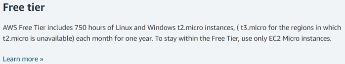

1.1 Configure the AWS instance of the Relay
The first thing that we have to configure is Telesploit Relay
• The relay is cloud based:
In the example there is AWS, but we can use any service:
Digital Ocean, Google...
With AWS(https://signin.aws.amazon.com/) we have 1 year free. It will use a basic
t2.micro instance, this is one of the most basic one. But for what have to do, it is ok
 *Probably Mattermost(a cloud based, Slack
alternative) will not work, because as minimum require 2GB of ram, but everything else will work
•
Simpler Interface of AWS: https://lightsail.aws.amazon.com/ 1)
Create
Instance 1- Select a platform: Linux
2- Select a blueprint: OS only → Ubuntu(The relay script
is ben tested on Ubuntu 18.04)
3- Change SSH key pair:
1> When we download the private key(the
Default one) it will be with permission 644(that is too open) we have to change it to 0600
2> This private
key(with extension .pem), has not a passphrase.
We have to add a passphrase, otherwise if accidentally
someone came in possession of the private key can access to the instance
ssh-keygen -p -f <privateKey.pem> -P "passphrase"
We ha to save this private key otherwise we will can not access to the instance
To know more
about public and private keys used on AWS see:
https://docs.aws.amazon.com/AWSEC2/latest/UserGuide/ec2-key-pairs.html
4- As the instance plan choose the lowest one (3.5$ each month)
5- Identify your Instance: give to it a
name
2)
Now in the home of lightsail.aws.amazon.com we see our new instance The public
address assigned could change if the instance is been shutdown for a while!
1-
We have to assign to it a static ip:
1> click on the
instance
2> Networking tab
3> create a static ip
1. Attach to an instance: select the one
that we have created for our relay
2. Identify static ip: give it a name
4> Now we have a static
public ip for our instance
2-
Add port 443 listening
1> click on the instance
2> Networking tab
1. Firewall: add another connection
1)
Application: HTTPS
2) Protocol: TCP
3) Port Range: 443
*We will not use HTTP for communicate, the
only time that we need it(listening on localhost on the relay) is to validate the certificate of the website with
Let’s Encrypt
it will set up a stand alone server to do a challenge to make sure that we own the domain.
This mean that after we run relay_setup.sh, we can come back here and delete this listening connection.
We
will require it open every 90 days when we have to renew the certificate with Let's Encrypt
We can also
leave the 80 port open but is not recommended
To know more go to:
•
https://letsencrypt.org/docs/allow-port-80/ •
https://letsencrypt.org/docs/challenge-types/•
We need associate the Ip address of the instance with a subdomain of our own domain To do
that on godaddy see:
https://www.godaddy.com/help/create-a-subdomain-4080